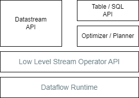
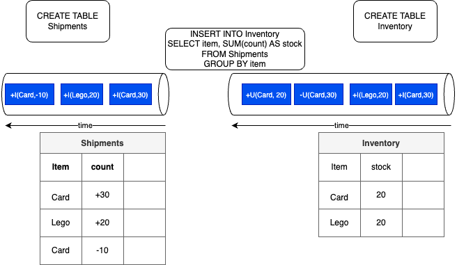
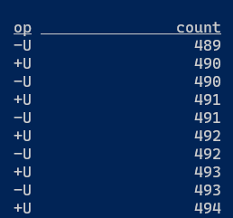
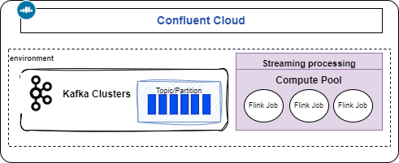
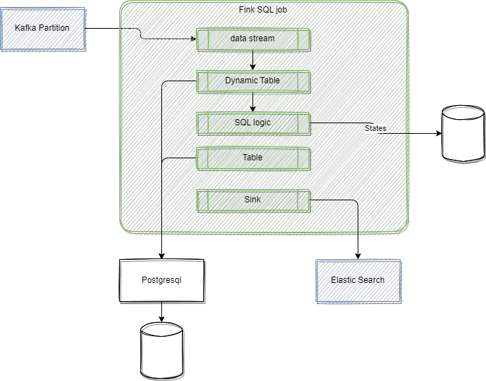

Flink SQL and Table API¶
Updates
Created 02/2021 Modified 10/24
Introduction¶
Flink SQL is a compliant standard SQL engine for processing batch or streaming data on top of distributed computing server managed by Flink.
Flink’s SQL support is based on Apache Calcite to support SQL based streaming logic implementation. It is using the Table API which is a language-integrated query API for Java, Scala, and Python that allows the composition of queries from relational operators such as selection, filter, and join.
The Table API can deal with bounded and unbounded streams in a unified and highly optimized ecosystem inspired by databases and SQL.
Table and SQL are implemented on top of low level stream operator API, which itself runs on the dataflow runtime:

It is possible to code the SQL and Table API in a Java, Scala or Python or use SQL client, which is an interactive client to submit SQL queries to Flink and visualize the results.
Stream or bounded data are mapped to Table. The following command loads data from a csv file and creates a dynamic table in Flink:
CREATE TABLE car_rides (
cab_number VARCHAR,
plate VARCHAR,
cab_type VARCHAR,
driver_name VARCHAR,
ongoing_trip VARCHAR,
pickup_location VARCHAR,
destination VARCHAR,
passenger_count INT
) WITH (
'connector' = 'filesystem',
'path' = '/home/flink-sql-quarkus/data/cab_rides.txt',
'format' = 'csv'
);
See the getting started to run locally with a sql client.
Main use cases¶
Flink and Flink SQL can be used in two main categories of application:
- Reactive application, event-driven
- Data products with real-time white box ETL pipeline: schematizing, cleaning, enriching for data lake, lake house, feature store or vector store.
Parallel with Database¶
Database applications are classified in one of the two domains of Online Transaction Processing (OLTP) or Online Analytical Processing (OLAP) used for business reporting.
Databases have catalog, database, tables, views, materialized views. The most important component is the Query processor, which receives queries and then plans before the execution using the catalog (metadata of the tables. functions...), then executes the query using the Storage engine to access to the data to finally generate the results.
The views are virtual tables based on the result of the SQL queries. Some Database has also the Materialized View that caches the results into a physical table. For example, a group_by on an aggregate, may cache the result by the grouping element and the aggregate in a new table. Materialized view can be updated by a full refresh, executing the query again, or with incremental result.
Flink SQL uses dynamic table, coming from data streams, and use material view with incremental updates. It is not a database but a query processor. The catalog in Confluent Cloud is accessing the schema registry for a topic. and the execution of the query is done on Flink cluser that access to records in topics.
Flink can support exactly once or at least once (duplicates are possible) guarantee, depending of the configuration and the external systems used for input and output tables.
For effectively exactly once processing the source needs to be replayable and the sink needs to support transaction. Kafka topics support both, and the consumer protocol supports the read-committed semantic. Transaction scope is at the single-key level. While ACID transaction in database supports multiple keys integrity.
SQL Programming Basic¶
Flink SQL tables are dynamic, because they change overtime, and some tables are more a changelog stream than static tables.
The following diagram illustrates the main processing concepts: the shipments table keeps track of product shipments while the inventory keeps the current quantity of each item. The insert statement is the stream processing to update the inventory from the new shipment records. This SQL statement uses the sum aggregator operation on the count for each item. The items are shuffled to group them by item.

The SQL is applied to the stream of data, data is not stored in Flink. The events can be insert, update or delete record in the table. The diagram illustrates that, at the sink level, the first events reflect adding items to the inventory, while when there is an update to the Card inventory, a first record is created to remove the current stock of Card item and send a new message with the new stock value (2 cards). This last behavior is due to the group by semantic, and the fact that the right 'table' is an update only table, while the left one ia an append only table.
Dynamic Table can also being persisted in Kafka Topic, so table definition includes statement on how to connect to Kafka. When doing batch processing the sink can be a table in database or a csv file on the filesystem.
Note that SQL Client executes each INSERT INTO statement as a single Flink job. STATEMENT SET can be used to group insert statements (into a set). As the job manager schedules the job to the task managers, SQL statements are executed asynchronously. While for batch processing; developer can set set table.dml-sync option to true
With streaming, the "ORDER BY" statement applies only on timestamp in ascending order, while with batch, it can apply to any record field.
Data lifecycle¶
In a pure Kafka integration architecture, like Confluent Cloud, the data life cycle looks like the following:
- Data is read from a Kafka topic to a Flink SQL table
- Data is processed with SQL statements
- Data is returns as result sets in interactive mode, or to a table (mapped to a topic) in continuous streaming mode.
Some SQL operators¶
| Type | Operators | Comments |
|---|---|---|
| Stateless | SELECT <projection | transformation> WHERE |
| Materialized | GROUP BY |
Dangerously Stateful, keep an internal copy of the data related to the query |
| Temporal | time windowed operations, interval joins, time-versioned joins, MATCH_RECOGNIZE |
Stateful but contrained in size |
As elements are kept in storage to compute materialized projection, we need to assess the number of elements to keep. Million to billion of small items are possible. But query running forever may eventually overflow the data store. In this last case, the Flink task will eventually fail.
Below is an example of Join query:
SELECT transactions.amount, products.price
FROM transactions
JOIN products
ON transactions.product_id = products.id
Any previously processed records can be used potentially to process the join operation on new arrived records, which means keeping a lot of records in memory. As memory will be bounded, there are other mechanisms to limit those joins or aggregation, for example using time windows.
The following query counts the number of different product type arriving from the event stream by interval of 10 minutes.
SELECT window_start, product_type, count(product_type)
FROM TABLE(
TUMBLE(
TABLE events,
DESCRIPTOR(timestamp),
INTERVAL '10' MINUTES
)
)
GROUP BY window_start, window_end, product_type
When the internal time has expired the results will be published. This puts an upper bound on how much state Flink needs to keep to handle a query, which in this case is related to the number of different product type.
TUMBLE, HOP SESSION, CUMMULATE are windowing table-valued functions , see also the advanced section below.
How to do SQL basic processing¶
How to consume from a Kafka topic to a SQL table?
On Confluent Cloud this is the standard integration as all sources are Kafka topic. The From right operand proposes the list of topic/table for the catalog and database selected.For Flink OSS or Confluent Platform for Flink the WITH statement helps to specify the source topic.
How to load data from a csv file using filesystem connector using SQL
Enter the following statement in a SQL client session:
Create a table from the content of the fileCREATE TABLE employee_info (
emp_id INT,
name VARCHAR,
dept_id INT
) WITH (
'connector' = 'filesystem',
'path' = '/home/flink-sql-demos/00-basic-sql/data/employes.csv',
'format' = 'csv'
);
Show tables and list some elements within the table.
How to filter out records?
Count the number of events related to a cancelled flight (need to use one of the selected field as grouping key):
select fight_id, count(*) as cancelled_fl from FlightEvents where status = 'cancelled' group by flight_id;
Recall that this results produces a dynamic table.
Kafka record timestamp and table $rowtime
The Kafka record timestamp is automatically mapped to the $rowtime attribute, which is a read only field. Using this field we can order the record by arrival time:
Dealing with late event
Any streams mapped to a table have records arriving more-or-less in order, according to the $rowtime, and the watermarks let the Flink SQL runtime know how much buffering of the incoming stream is needed to iron out any out-of-order-ness before emitting the sorted output stream.
We need to specify the watermark strategy as for example within 30 second of the event time:
sql
create table new_table (
....
`event_time` TIMESTAMP_LTZ(3) METADATA FROM 'timestamp',
watermark for `event_time` as `event_time` - INTERVAL '30' SECOND
);
How to generate data using Flink Faker?
Create at table with records generated with faker connector using the DataFaker expressions..
CREATE TABLE `bounded_pageviews` (
`url` STRING,
`user_id` STRING,
`browser` STRING,
`ts` TIMESTAMP(3)
)
WITH (
'connector' = 'faker',
'number-of-rows' = '500',
'rows-per-second' = '100',
'fields.url.expression' = '/#{GreekPhilosopher.name}.html',
'fields.user_id.expression' = '#{numerify ''user_##''}',
'fields.browser.expression' = '#{Options.option ''chrome'', ''firefox'', ''safari'')}',
'fields.ts.expression' = '#{date.past ''5'',''1'',''SECONDS''}'
);
What are the different SQL execution modes?
Using previous table it is possible to count the elements in the table using:
and we get different behavior depending of the execution mode:
set 'execution.runtime-mode' = 'batch';
# default one
set 'execution.runtime-mode' = 'streaming';
set 'sql-client.execution.result-mode' = 'table';
In changelog mode, the SQL Client doesn't just update the count in place, but instead displays each message in the stream of updates it's receiving from the Flink SQL runtime.

How to mask a field?
Create a new table from the existing one, and then use REGEXP_REPLACE to mask an existing attribute
How to specific to Confluent Cloud¶
See Flink Confluent Cloud queries documentation.
Each topic is automatically mapped to a table with some metadata fields added, like the watermark in the form of $rowtime field, which is mapped to the Kafka record timestamp. To see it, run describe extended table_name; With watermarking. arriving event recors will be ingested roughly in order with respect to the $rowtime time attribute field.
How to run Confluent Cloud for Flink?
See the note, but can be summarized as: 1/ create a stream processing compute pool in the same environment and region as the Kafka cluster, 2/ use Console or CLI (flink shell) to interact with topics.

Create a table with topic as persistence
See the WITH options.
create table `small-orders` (
`order_id` STRING NOT NULL,
`customer_id` INT NOT NULL,
`product_id` STRING NOT NULL,
`price` DOUBLE NOT NULL
) distributed by hash(order_id) into 1 buckets
with (
'kafka.retention.time' = '1 d'
);
insert into `small-orders` select * from `examples`.`marketplace`.`orders` where price < 20;
distributed by hash(order_id) and into 1 buckets specify that the table is backed by a Kafka topic with 1 partitions, and the order_id field will be used as the partition key.
How to transfer the source timestamp to another table
As $rowtime is the timestamp of the record in Kafka, it may be interesting to keep the source timestamp to the downstream topic.
create table `new_table` (
`order_id` STRING NOT NULL,
...
`event_time` TIMESTAMP_LTZ(3) METADATA FROM 'timestamp')
distributed....
Then the move data will look like:
Running Confluent Cloud Kafka with local Flink
The goal is to demonstrate how to get a cluster created in an existing Confluent Cloud environment and then send message via FlinkFaker using local table to Kafka topic:

The scripts and readme .
Supported connector for Flink SQL and Confluent Cloud
See the product documentation at this link.
create a long running SQL with cli
Get or create a service account.
When and how to use custom watermark?
Developer should use their own watermark strategy when there are not a lot of records per topic/partition, there is a need for a large watermark delay, and need to use another timestamp.
How to more advanced SQL¶
Aggregation over a window
Windows over approach is to end with the current row, and stretches backwards through the history of the stream for a specific interval, either measured in time, or by some number of rows. For example counting the umber of flight_schedule events of the same key over the last 100 events:
select
flight_id,
evt_type,
count(evt_type) OVER w as number_evt,
from flight_events
window w as( partition by flight_id order by $rowtime rows between 100 preceding and current row);
The results are updated for every input row. The partition is by flight_id. Order by $rowtime is necessary.
Time-valued function
Lower level Java based programming model¶
- Start Flink server using docker (start with docker compose or on k8s).
- Start by creating a java application (quarkus create app for example or using maven) and a Main class. See code in flink-sql-quarkus folder.
- Add dependencies in the pom
<dependency>
<groupId>org.apache.flink</groupId>
<artifactId>flink-table-api-java-bridge</artifactId>
<version>${flink-version}</version>
</dependency>
<dependency>
<groupId>org.apache.flink</groupId>
<artifactId>flink-table-runtime</artifactId>
<version>${flink-version}</version>
<scope>provided</scope>
</dependency>
<dependency>
<groupId>org.apache.flink</groupId>
<artifactId>flink-table-planner-loader</artifactId>
<version>${flink-version}</version>
<scope>provided</scope>
</dependency>
The TableEnvironment is the entrypoint for Table API and SQL integration. See Create Table environment
public class FirstSQLApp {
public static void main(String[] args) {
StreamExecutionEnvironment env = StreamExecutionEnvironment.getExecutionEnvironment();
StreamTableEnvironment tableEnv = StreamTableEnvironment.create(env);
A TableEnvironment maintains a map of catalogs of tables which are created with an identifier. Each identifier consists of 3 parts: catalog name, database name and object name.
// build a dynamic view from a stream and specifies the fields. here one field only
Table inputTable = tableEnv.fromDataStream(dataStream).as("name");
// register the Table object in default catalog and database, as a view and query it
tableEnv.createTemporaryView("clickStreamsView", inputTable);

Tables may either be temporary, and tied to the lifecycle of a single Flink session, or permanent, and visible across multiple Flink sessions and clusters.
Queries such as SELECT ... FROM ... WHERE which only consist of field projections or filters are usually stateless pipelines. However, operations such as joins, aggregations, or deduplications require keeping intermediate results in a fault-tolerant storage for which Flink’s state abstractions are used.
ETL with Table API¶
See code: TableToJson
public static void main(String[] args) throws Exception {
StreamExecutionEnvironment streamEnv = StreamExecutionEnvironment.getExecutionEnvironment();
StreamTableEnvironment tableEnv = StreamTableEnvironment.create(streamEnv);
final Table t = tableEnv.fromValues(
row(12L, "Alice", LocalDate.of(1984, 3, 12)),
row(32L, "Bob", LocalDate.of(1990, 10, 14)),
row(7L, "Kyle", LocalDate.of(1979, 2, 23)))
.as("c_id", "c_name", "c_birthday")
.select(
jsonObject(
JsonOnNull.NULL,
"name",
$("c_name"),
"age",
timestampDiff(TimePointUnit.YEAR, $("c_birthday"), currentDate())
)
);
tableEnv.toChangelogStream(t).print();
streamEnv.execute();
}
Join with a kafka streams¶
Join transactions coming from Kafka topic with customer information.
// customers is reference data loaded from file or DB connector
tableEnv.createTemporaryView("Customers", customerStream);
// transactions come from kafka
DataStream<Transaction> transactionStream =
env.fromSource(transactionSource, WatermarkStrategy.noWatermarks(), "Transactions");
tableEnv.createTemporaryView("Transactions", transactionStream
tableEnv
.executeSql(
"SELECT c_name, CAST(t_amount AS DECIMAL(5, 2))\n"
+ "FROM Customers\n"
+ "JOIN (SELECT DISTINCT * FROM Transactions) ON c_id = t_customer_id")
.print();
Challenges¶
- We cannot express everything in SQL but we can mix Flink Stream and Table APIs
Read more¶
- SQL and Table API overview
- Table API
-
Flink API examples presents how the API solves different scenarios:
- as a batch processor,
- a changelog processor,
- a change data capture (CDC) hub,
- or a streaming ETL tool